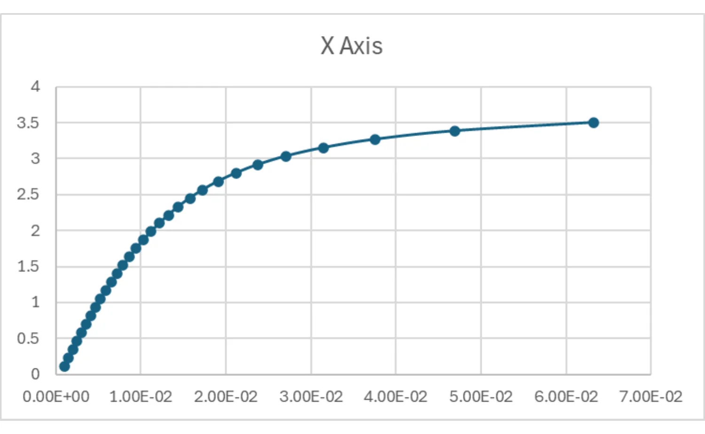

San Giuliano bell tower, Genoa
Seismic assessment of a medieval stone tower in the Albaro district, from point cloud to nonlinear analysis and an intervention compatible with a historic building.
The building
The church of San Giuliano, on the Ligurian coast, dates back at least to the 13th century. Its bell tower is built of traditional Ligurian stone, later repaired with brick and render: a square plan, arched openings, cross vaults at each level, and an octagonal roof with four small pinnacles at the corners.
1. Point cloud
The work started from a point cloud of the whole church complex. The bell tower was extracted from it so that its real geometry, with all the irregularities of a centuries-old building, became the basis of the model.

2. 3D model
From the point cloud, a 3D model of the tower was built in AutoCAD: floor plans, cross vaults (from the intersection of two barrel vaults), vault infills and the octagonal roof. Details were removed through controlled simplifications so that meshing in the analysis software would not fail.

3. Nonlinear analysis in ANSYS
Separate properties were defined for walls, infills and vaults, and the nonlinear behaviour of masonry was simulated with a Drucker–Prager model. Because material data were limited, strengths were reduced by a confidence factor. The mesh was finer in the vaults (4 cm) and coarser in the walls (20 cm).
- Under self-weight, the maximum displacement was about 7 mm, with stress concentrations where infills meet walls and vaults.
- In the seismic analysis, horizontal acceleration was increased step by step. The tower remained stable up to about 3.5 m/s² in X and 3.3 m/s² in Y.


4. Intervention proposal
The aim was to strengthen the tower without destroying the behaviour and identity of a stone building:
- Steel tie rods or cables: more confinement without touching the original material.
- Ring beams in reversible materials such as timber, stainless steel or FRP, at several levels.
- Avoiding excessive stiffening and added reinforced concrete, and using lime mortar instead of cement.
What this means for buildings in Urmia
The same method, careful survey, a realistic model, analysis and the minimum necessary intervention, works for the brick and adobe buildings of Urmia. Every old building should first be understood, then strengthened.